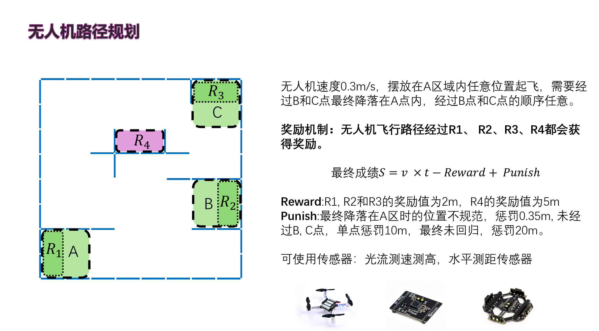

中文English
实验 13: 综合项目展示任务
Integrated Project Demonstration
最后综合测试
本实验最终评价仅设置一项综合测试任务。无人机以 0.3 m/s 的固定速度飞行，从 A 区域内任意位置起飞，飞行过程中需要经过 B 点和 C 点，经过 B、C 的顺序不限，最终降落回 A 区域内。

场地约束
- 挡板位置不一定固定，教师可根据测试批次调整挡板布置，现场以实际摆放为准。
- 奖励点和起止点是固定的：R1、R2、R3、R4 的位置固定；起止区域固定为 A 区域。
- 程序不应只硬编码图中挡板坐标，应结合传感器数据、现场观测或规划策略完成避障与路径调整。
评分规则
- 最终成绩：S = v × t - Reward + Punish，成绩值越小越优。
- Reward：R1、R2、R3 的奖励值均为 2 m，R4 的奖励值为 5 m。
- Punish：最终降落在 A 区时位置不规范，惩罚 0.35 m；未经过 B 点或 C 点，单点惩罚 10 m；最终未回归 A 区，惩罚 20 m。
- 可使用传感器包括光流测速测高模块和水平测距传感器。
展示要求
- 展示前应向教师说明代码逻辑、速度设置、传感器使用方式和急停方案。
- 飞行过程中需保持一名同学负责终端控制和急停，另一名同学记录完整飞行过程。
- 若无人机接触挡板、姿态明显异常或进入不安全状态，应立即终止程序。